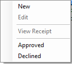

There are four status values, they are:
· Submitted - Initially entered
by a staff member.
· Approved - Expense
has been approved.
· Declined - The expense claim has been declined.
· Paid - The expense claim has been
marked as paid for the staff members pay
check.
If an expense claim has been refused, the member of staff submitting it can edit the claim to
make any necessary changes.
Right clicking an expense item will load a menu allowing staff members to take appropriate
action, as well as viewing a receipt.
